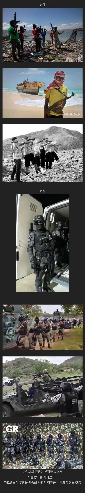

멕시코 카르텔 상상 현실
댓글
전국시대 마냥 할거하네
위 아래 다 현실이지 뭐 ㅋㅋ
멕시코는 뭐 공권력이 멕시코 시티 한정이지 ㅋㅋ나머지는 카르텔 군벌 세력한테 분산돼서
쟤네 저렇게 된 계기가 정예 엘리트 군인들이 카르텔 만들어서 다른 카르텔들 압도적으로 조지니까 다른 카르텔들도 엘리트 군인들 돈주고 데려와서 상향평준화 된거라던데
아파치 한대면 싹 날릴거 같은데
일반시민들다죽일거냐고 정규군이못이기는이유 미국도 베트남점에서 피해를많이본이유 베트남인 다죽으르하고 폭탄 마구잡이로 떨어뜨리면 미국만욕먹지머
외국인이니?
특수부대랑 군인이 은퇴하면 들어가서 그럼 가서 교육시키고
멕시코는 자정능력 답없음, 해결책은 미국이 미는 수 밖에
사실상 군벌
이번에 처음알았는데 멕시코도 합중국이구나
저런 정규군 무장수준의 병력이 지역먹고다니면 사실상 전국시대맞네
모던워페어에서 라스알마스만 봐도...